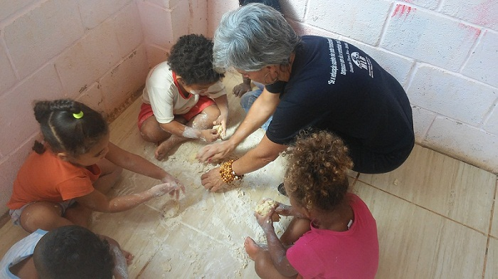

Seja bem vindo ao nosso espaço!
A Creche Tia Carminha atua desde 2012 com as famílias do Vale das Ocupações do Barreiro, buscando cuidar com afeto e revolução e proporcionar às crianças um ambiente educativo, criativo, instigante acolhedor e seguro que garanta um pleno desenvolvimento psicológico, cognitivo, intelectual, social, físico e emocional.
Nosso Mundo Tia Carminha
[AQUI ENTRA UM ALBUM DE FOTOS DAS ATIVIDADES QUE AS CRIAÇAS FIZERAM] Movimento de Luta nos Bairros, Vilas e Favelas
O Movimento de Luta nos Bairros, Vilas e Favelas (MLB) é um movimento social nacional formado por milhares de famílias que lutam pela reforma urbana e pelo direito humano de morar dignamente.
A reforma urbana é um instrumento para construir uma sociedade diferente, com igualdade, dignidade e direitos para todos. Uma educação popular de qualidade e um ambiente seguro para as crianças é uma das mudanças da reforma urbana que defendemos!
A luta por moradia digna não se separa da luta por educação de qualidade e por isso as ocupações urbanas educam o povo para a necessidade de lutar e desenvolve o trabalho coletivo. Ocupar é um ato de rebeldia, educar também é!
O Movimento de Mulheres Olga atua em ações de combate à violência contra as mulheres. Clique e sabia mais!